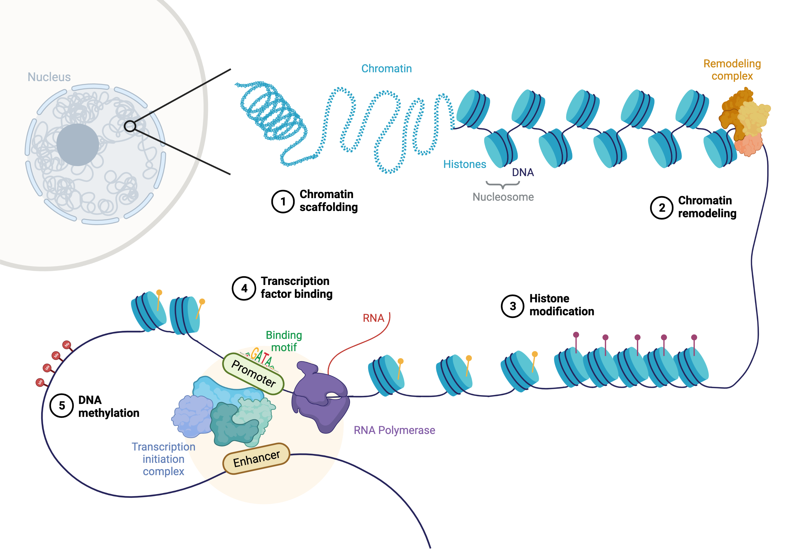
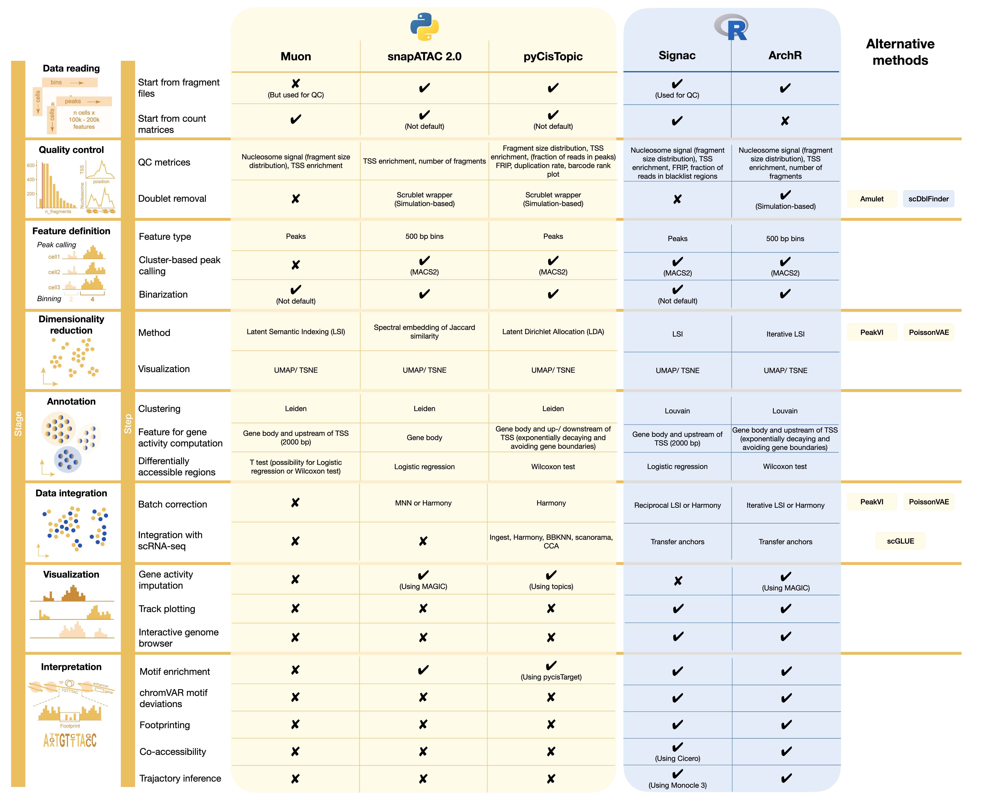

25. 单细胞 ATAC 测序#
关键要点
染色质可及性（chromatin accessibility）是细胞身份的关键决定因素，为基因表达谱提供了一个正交的信息层。它反映了细胞综合的调控状态，包括 DNA 甲基化、组蛋白修饰和转录因子活性，这些共同影响基因表达和细胞分化过程。
由于每个细胞中 DNA 拷贝数有限，scATAC-seq 数据非常稀疏，导致许多特征的计数为零。界定具有生物学意义的特征（如峰 peak 或基因组分箱 bin）对分析至关重要，但要捕捉细胞类型特异的可及性可能颇具挑战。
25.1. 动机#
一个生物的每个细胞都共享相同的 DNA，拥有相同的一组被称为“基因”的功能单元。考虑到这一点，是什么决定了细胞从免疫系统的自然杀伤细胞到在全身传递电化学信号的神经元这般巨大的多样性呢？在前几章中，我们看到细胞身份和功能可以从每个细胞的基因表达谱中推断出来。基因表达的调控，是由 DNA 甲基化、组蛋白修饰和转录因子活性等调控机制之间复杂的相互作用所驱动的。 染色质 可及性在很大程度上反映了细胞综合的调控状态，可作为信息的一个正交层，补充 mRNA 用于描述细胞身份的（基因表达）水平。此外，探索染色质可及性谱，还能让我们进一步洞察 scRNA-seq 数据可能无法捕捉的基因调控机制和细胞分化过程。
{kind=link}

图25.1 影响染色质可及性的机制概览。使用以下工具创建： BioRender.com.#
如上图所示，染色质可及性受从高阶结构到低层 DNA 修饰等多个层次的影响。 (1) 由支架/基质附着区（S/MAR）和核周蛋白（如核孔复合物 NPC 或核纤层蛋白 lamin）驱动的染色质骨架，会影响染色质的紧实程度和基因表达 [Buchwalter et al., 2019, Narwade et al., 2019]. (2, 3) 更局部的可及性——通常表现为致密堆积的异染色质与开放的常染色质之分——可以由 ATP 依赖和 ATP 非依赖的染色质重塑复合物，以及乙酰化、甲基化和磷酸化等组蛋白修饰主动调控。 (4) 此外，转录因子的结合可以影响核小体的定位，并导致组蛋白修饰酶和染色质重塑因子的招募。 (5) 在 DNA 层面，甲基化 CpG 位点会影响包括转录因子和组蛋白修饰酶在内的各种蛋白质的结合亲和力，二者结合起来会导致相应基因组区域的沉默。关于动画演示，我们也推荐 这2分钟的视频 介绍了表观遗传学与基因活性的调控（鸣谢伊利诺伊大学 SQE 的 Nicole Ethen）。关于基因组调控和 TF 活性的全面而最新的综述，我们推荐参阅 [Isbel et al., 2022].
综合来看，界定细胞身份的一个基本要素，就是每个细胞的调控状态。在本章中，我们重点讨论由以下技术测得的染色质可及性数据： 高通量测序的转座酶可及染色质单细胞测定法（Single-Cell Assay for Transposase-Accessible Chromatin with High-Throughput Sequencing，scATAC-seq） 或作为 10x Multiome 测定法（scATAC 与 scRNA-seq 相结合）.
在带你走完预处理步骤之后，这一分析将使我们能够：
用一种与 scRNA-seq 分析正交的方法来刻画细胞身份
识别细胞状态特异的转录调控因子
将基因表达与序列特征联系起来
梳理驱动细胞分化和疾病状态的表观遗传机制
25.2. 实验方法#
目前，商用试剂盒是最广泛使用的实验方案，因此我们以 10x Multiome 测定法生成的数据来展示分析（稍作改动后，也适用于用单模态 10x 单细胞 ATAC-seq 测定法生成的数据）。
用于测量染色质可及性的关键原理，是“高通量测序的转座酶可及染色质测定法”（ATAC-seq）。起点是所关注组织的单细胞悬液。先提取细胞核，然后用一种 Tn5 转座酶批量进行转座反应——它结合到染色质的开放区域，并产生带标签的（tagmented）DNA 片段。随后把细胞核加载到 10x Chromium 控制器上，形成包含凝胶珠和单细胞的液滴，也称为凝胶珠包乳液（Gel Bead-in-Emulsion，GEM）。在每个液滴内，RNA 分子和 DNA 片段被加上条形码；溶解 GEM 之后，对核苷酸序列做预扩增，得到最终的 scATAC-seq 和 scRNA-seq 文库。
在下图中，我们展示 scATAC-seq 部分的片段化过程 [Martens et al., 2022]。scATAC-seq 使用 Tn5 转座酶把测序接头插入单细胞中开放的染色质区域，从而切割 DNA 并附上测序接头，形成 Tn5 片段。两次 Tn5 插入会产生一个带测序接头的片段，而插入的方向至关重要，因为只有两端连接着两种不同接头的片段才能被捕获并扩增。扩增后的片段随后进行双端（paired-end）测序，并比对到参考基因组。
25.3. 数据特征——特征定义与稀疏性#
单细胞 ATAC-seq 数据测量的是整个基因组范围内的染色质可及性。由于这既包括编码区也包括非编码区，因此不能像 scRNA-seq 数据那样把基因用作预定义的特征。相反，界定具有生物学意义的特征最常见的做法，是检测相对于背景而言可及性较高的区域——即基因组上片段计数分布中的峰（peak）。编码区中的峰表示某个基因可能正在被转录，而在非编码区，可及性被视为转录因子等调控蛋白结合的前提或结果。然而，对数据集中所有细胞统一识别峰，可能会掩盖细胞类型特异的可及性、或稀有细胞类型的可及性谱。因此，一种被提出的解决方案是识别聚类特异的峰，这需要先对细胞做一次与峰无关的聚类。SnapATAC[Fang et al., 2021] 和 ArchR[Granja et al., 2021] 提出了一种分箱（binning）策略：把整个基因组划分成大小一致的窗口来创建特征，并用这组特征对细胞进行聚类。
一旦以某种方式定义好特征集，就要为每个细胞定义一个衡量这些特征中 Tn5 活性的量。主要有三种方法：统计与某特征重叠的读段数、统计与某特征重叠的片段数，以及二值化。10x Genomics 的 Cell Ranger ATAC 流程统计与峰区域重叠的读段数，而广泛使用的 Signac 框架 [Stuart et al., 2020] 统计与某个特征重叠的片段数。另一方面，ArchR 则 [Granja et al., 2021] 统计读段的末端，并默认对其进行二值化。
需要注意，统计读段与统计片段之间存在一些差异。在 scATAC-seq 中，双端测序会产生两条通常彼此相邻的读段。因此，只有当一对读段中有一条落在特征之外时，才会产生奇数计数 [Martens et al., 2022]。这意味着所采用的计数策略会影响最终的计数分布。已有研究表明，读段计数策略会导致计数分布中偶数计数远多于奇数计数，而统计片段则没有这种效应 [Martens et al., 2022, Miao and Kim, 2022].
scATAC-seq 数据的另一个重要特征是其高稀疏性。由于二倍体生物的每个细胞中只有两份 DNA，因此某个给定碱基对位置的最大计数是 2（注意，由于峰或 bin 跨越较长的范围，其中可以有多于两个的计数）。这会导致许多特征的计数为零，从而得到一个高度稀疏的计数矩阵。为应对这一点，一些方法采用对计数二值化的做法，也就是说，只要有一条读段或片段与某特征重叠，该特征就被判定为“可及” [Ashuach et al., 2022, Bravo González-Blas et al., 2019, Granja et al., 2021]。不过，二值化会导致信息丢失，并且在检测可及性的微小差异时可能不那么灵敏 [Martens et al., 2022].
必须指出，scATAC-seq 数据的最佳计数策略仍存在争论，需要进一步开展独立的基准测试。最终，计数策略的选择将取决于具体的研究问题和数据集的特点。
25.4. 数据分析工作流程概览#
在接下来的几节中，我们将带你走完分析 scATAC-seq 数据的标准流程。配套的概览图展示了分析的各个阶段，并突出了为此常用的各框架之间的差异。首先，我们会用 Python 和 muon 来讲解质量控制和降维的概念。最后，我们将演示如何把你的 muon 对象转移到 R，并用 Signac 进行数据可视化和解读。
{kind=link}

图25.2 scATAC-seq分析步骤概述。#
25.5. 参考文献#
Tal Ashuach, Daniel A. Reidenbach, Adam Gayoso, and Nir Yosef. PeakVI: A deep generative model for single-cell chromatin accessibility analysis. Cell Reports Methods, pages 100182, March 2022. URL: https://www.sciencedirect.com/science/article/pii/S2667237522000376 (visited on 2022-03-22).
Carmen Bravo González-Blas, Liesbeth Minnoye, Dafni Papasokrati, Sara Aibar, Gert Hulselmans, Valerie Christiaens, Kristofer Davie, Jasper Wouters, and Stein Aerts. cisTopic: cis-regulatory topic modeling on single-cell ATAC-seq data. Nature Methods, 16(5):397–400, May 2019. Number: 5 Publisher: Nature Publishing Group. URL: https://www.nature.com/articles/s41592-019-0367-1 (visited on 2022-03-10), doi:10.1038/s41592-019-0367-1.
Abigail Buchwalter, Jeanae M. Kaneshiro, and Martin W. Hetzer. Coaching from the sidelines: the nuclear periphery in genome regulation. Nature Reviews Genetics, 20(1):39–50, 2019. URL: http://www.nature.com/articles/s41576-018-0063-5 (visited on 2023-04-01), doi:10.1038/s41576-018-0063-5.
Rongxin Fang, Sebastian Preissl, Yang Li, Xiaomeng Hou, Jacinta Lucero, Xinxin Wang, Amir Motamedi, Andrew K. Shiau, Xinzhu Zhou, Fangming Xie, Eran A. Mukamel, Kai Zhang, Yanxiao Zhang, M. Margarita Behrens, Joseph R. Ecker, and Bing Ren. Comprehensive analysis of single cell ATAC-seq data with SnapATAC. Nature Communications, 12(1):1337, February 2021. Number: 1 Publisher: Nature Publishing Group. URL: https://www.nature.com/articles/s41467-021-21583-9 (visited on 2022-03-31), doi:10.1038/s41467-021-21583-9.
Jeffrey M. Granja, M. Ryan Corces, Sarah E. Pierce, S. Tansu Bagdatli, Hani Choudhry, Howard Y. Chang, and William J. Greenleaf. ArchR is a scalable software package for integrative single-cell chromatin accessibility analysis. Nature Genetics, 53(3):403–411, March 2021. Number: 3 Publisher: Nature Publishing Group. URL: https://www.nature.com/articles/s41588-021-00790-6 (visited on 2022-03-27), doi:10.1038/s41588-021-00790-6.
Luke Isbel, Ralph S. Grand, and Dirk Schübeler. Generating specificity in genome regulation through transcription factor sensitivity to chromatin. Nature Reviews. Genetics, 23(12):728–740, December 2022. doi:10.1038/s41576-022-00512-6.
Laura D. Martens, David S. Fischer, Fabian J. Theis, and Julien Gagneur. Modeling fragment counts improves single-cell ATAC-seq analysis. May 2022. Pages: 2022.05.04.490536 Section: New Results. URL: https://www.biorxiv.org/content/10.1101/2022.05.04.490536v1 (visited on 2023-03-29), doi:10.1101/2022.05.04.490536.
Zhen Miao and Junhyong Kim. Is single nucleus ATAC-seq accessibility a qualitative or quantitative measurement? Technical Report, bioRxiv, April 2022. Section: New Results Type: article. URL: https://www.biorxiv.org/content/10.1101/2022.04.20.488960v1 (visited on 2022-04-28), doi:10.1101/2022.04.20.488960.
Nitin Narwade, Sonal Patel, Aftab Alam, Samit Chattopadhyay, Smriti Mittal, and Abhijeet Kulkarni. Mapping of scaffold/matrix attachment regions in human genome: a data mining exercise. Nucleic Acids Research, 47(14):7247–7261, 2019. URL: https://academic.oup.com/nar/article/47/14/7247/5527279 (visited on 2023-04-01), doi:10.1093/nar/gkz562.
Tim Stuart, Avi Srivastava, Caleb Lareau, and Rahul Satija. Multimodal single-cell chromatin analysis with Signac. Technical Report, bioRxiv, November 2020. Section: New Results Type: article. URL: https://www.biorxiv.org/content/10.1101/2020.11.09.373613v1 (visited on 2022-03-31), doi:10.1101/2020.11.09.373613.
25.6. 贡献者#
我们衷心感谢以下人员的贡献：
25.6.2. 审阅者#
Lukas Heumos